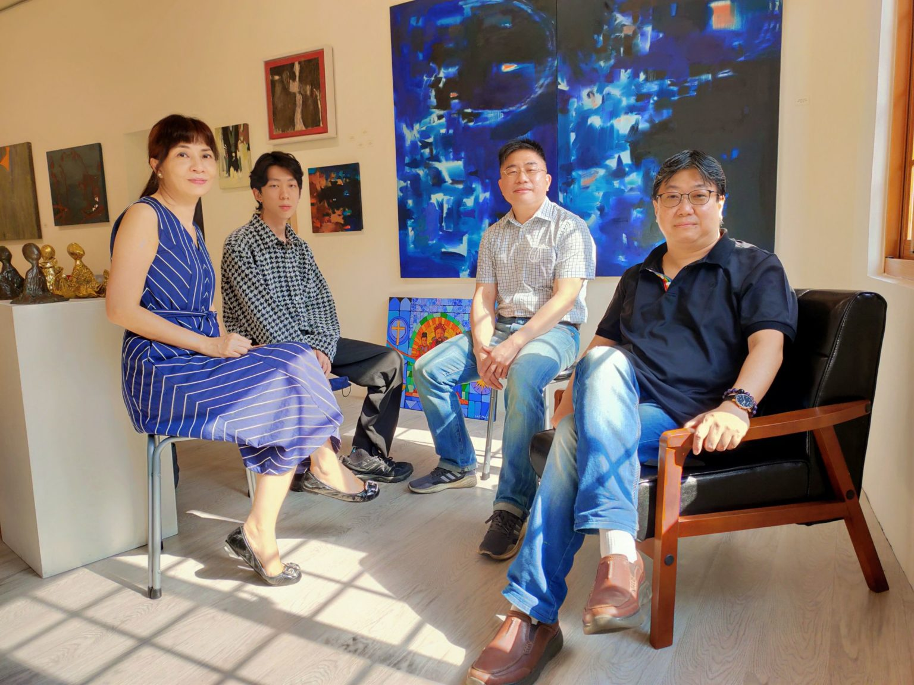
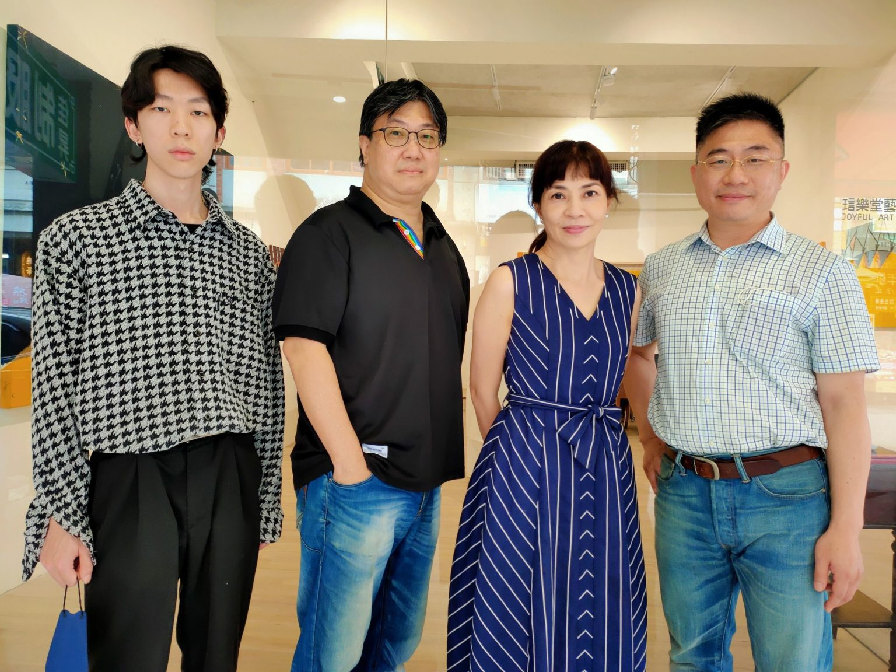
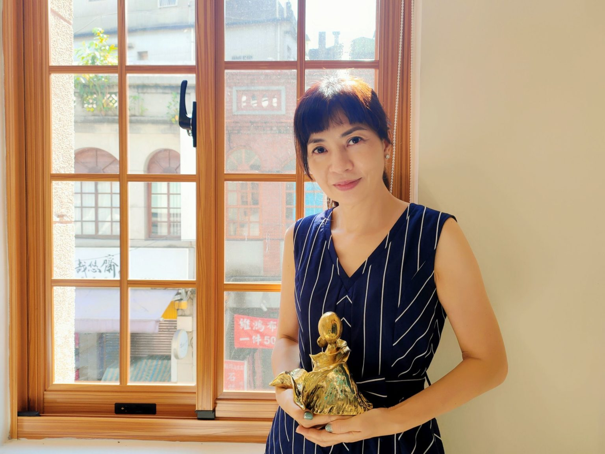
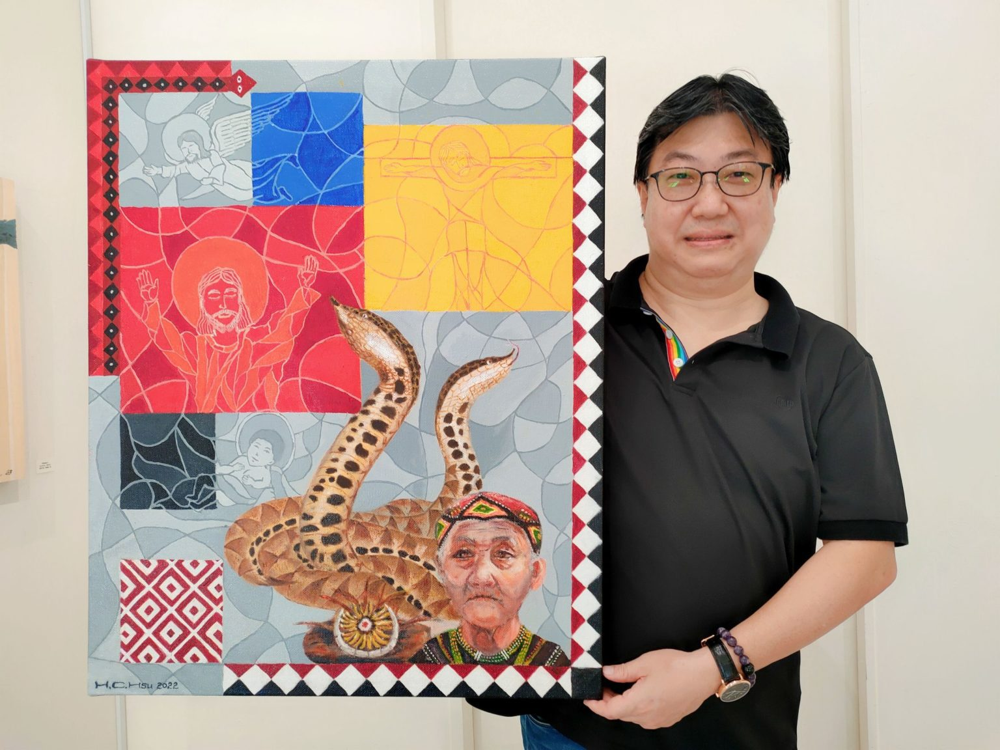
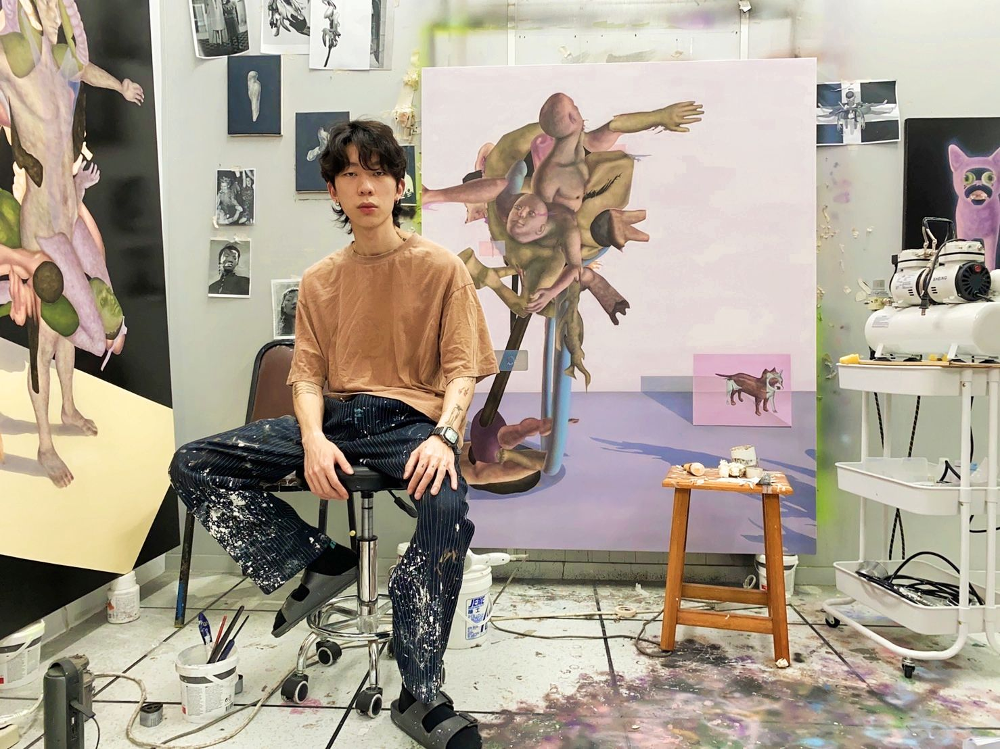
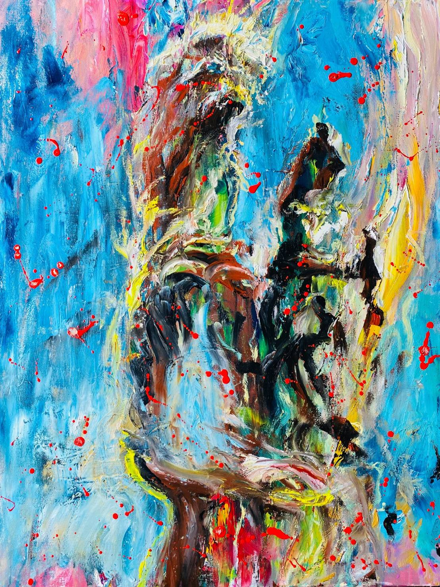
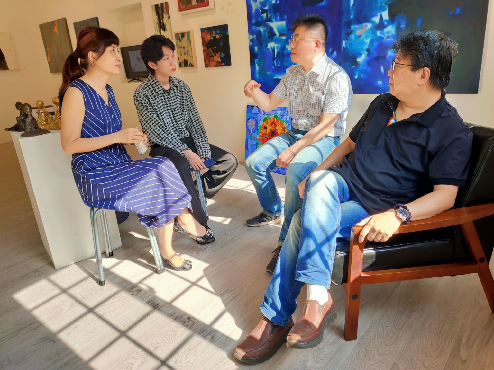

藝術的渾然天成，來自於創作的體悟與專注，在主客觀環境中讓作品維持熱度，彰顯出特有的光熱，就必然是成就藝術家所衍生的資質了。來自不同創作領域的藝術家，觀察社會發展的脈絡，從抽象的觀點看待眼前的無盡英華，以具象的層次揮灑風潮的執悟，在不明的意境中找到心靈的對話，從覺麗的期待中看見開朗豁然的會意，四人的油畫與雕塑聯展的呈現，在藝術創作的解構中獨具新意，自成一格。

四位藝術家陳岳宏（左起）徐恒鈞、蕭雅月與王家祁，對油畫與雕塑聯展賦予高度的期待。（記者 辛澎祥/攝）
目前就讀華梵大學美術與文創學系碩士班的王家祁、徐恒鈞、蕭雅月與陳岳宏，分別來自餐飲、保健、美術等不同的領域，基於對創作的熱愛，以及藝術追求的執著，用實驗的精神呈現出孕育多時的作品，讓人讚嘆不已。他們以聯展的方式共同發表多元風格的作品，凝聚了「人與技術的連結」、「神話彩繪」、「自然生態」與「空靜禪定」的主題意識，向觀者傳達了天地人的訊息，在無我中貼近生命的真實，從心靈悸動中延伸生命的出口，以虛實的界定為覺醒的藝術本質一窺堂貌，縱顯自在，怡然自得。

蕭雅月的銅雕作品在天地人和之間呈現無為而治的心境，快意篤實。（記者 辛澎祥/攝）
這四位中青世代藝術家，以其豐富的人生歷練與生活體驗，韻化對藝術的認知與表現，透過手繪與捏塑的過程，引導聆賞者在思考生命與信仰的重新建構中，用新的觀察與體會直入藝術家創作心境，產生了對話的雅趣與驚豔。在「不明•覺麗」的達觀與豁然中找到生命的定位，也突顯出在創作過程中所尋求的心靈釋放，真誠般的突破，是作品的價值湧現。在解讀作品的深義，也在尋求生命的解脫同時，即便觀者不了解作品訴求與迴異的創作思維，整體觀之都不影響作品本身想傳達給外界一種美學的概念，在參透生命後所得之的心境紓解，亦在作品所呈現篤實意念中得到深摯啟發。

徐恒鈞以原住民的圖騰意象為東西融合做了妥協的建構。（記者 辛澎祥/攝）
蕭雅月的雕塑創作，似以靜作的作品形貌表現出莊子倡議的生命精髓，傳達給觀者不同的想像概念，在疫情的現實紛擾中尋求自我，以坐忘的信念建構空無心境的昇華，漸階厚實對應的力量，讓人會意有感。徐恒鈞架接的傳統彩繪玻璃基底，延伸出東西方元素的融合所韻化的混搭，在衝突的信念中找到由平面到立體的層次感，找尋出生命的寄託真理。

年輕藝術家陳岳宏在體悟人與虛擬之間的關係中，作品尋求心境平衡的突破。(圖 /陳岳宏提供)
陳岳宏則在職場中深廣體悟人與虛擬之間的關係，藉由此次壓克力與油畫媒材的創作，體悟出環境更迭的失序，在人與物的虛實對應中試圖為周遭清理出認知的身體觀，清澈澄心。王家祁多年留法習藝的歷程，以油畫創作承載精神與內涵，用生命經驗豐富了創作素材，期待作品從抽象與具象中形成一種協調，具體展現意念，彰顯出作品生命力。

王家祁的油畫創作，在抽象與具象中尋求信念的突破，與觀者產生縝密對話，其作品「無題」似有意。（圖/王家祁 提供）
四位藝術家王家祁、徐恒鈞、蕭雅月、陳岳宏，在這次聯展中透過探索自我和生命的歷程，將心靈感受轉化為創作養分，引領觀者走入沈思、超脫及跨越的意境，具體感受藝術創作的美學感動。「不明•覺麗」將於25日假台北迪化街琂樂堂藝文空間展出至31日止，策展方將在28日舉行開幕式。

四位藝術家為即將登場的聯展開幕式進行討論，神情顯得積極審愼。（記者 辛澎祥/攝）